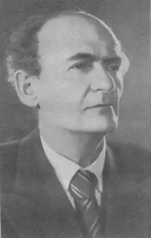

Рувим Ісайович Фраєрман народився 22 вересня 1891 року в Могильові в скромній по достатку єврейській родині. Його батько, невеликий підрядник, за родом діяльності змушений здійснювати часті поїздки по лісництвам і містечках Білорусі, нерідко брав із собою сина. Так юний Рувим отримував перші уроки життя. Щирий інтерес до людей, здатність бачити привабливий образ дійсності в її повсякденності, прекрасне знання життя лісу — все це у Фраєрмана звідти, з дитинства. Ще в шкільні роки в хлопчика помічали зачатки літературного таланту, а його публічний віршований дебют відбувся під час навчання в Могильовському реальному училищі — в журналі, який мав назву "Праця учня". З такого скромного події почалася його багата творча кар'єра, в якій вмістилися і робота в партійній пресі, і фронтова журналістика, і копіткий письменницьку працю.
Далекий Схід: початок дорослого життя
У 1916 році Рувим Фраєрман — студент Харківського технологічного інституту. Після третього курсу його для проходження виробничої практики відправляють на Далекий Схід, де Рувима і застають події розгорається громадянської війни. Вибір "червоні — білі" їм уже зроблено: всім серцем полюбив величну красу цього краю, а особливо його людей, він вступає в боротьбу проти їх подальшого пригнічення. Рувим Ісайович тісно пов'язаний з революційною молоддю і робочими далекосхідних міст — Хабаровська, Миколаївська-на-Амурі, Нікольська-Уссурійського, а в пору японської окупації — з партійним підпіллям. У Ніколаєвську він вступив до лав амурських партизанів, співпрацював з газетою "Червоний клич", потім був призначений комісаром партизанського загону. "З цим партизанським загоном, — згадував у своїх мемуарах письменник, — я пройшов тисячі кілометрів по непрохідній тайзі на оленях ...". Приєднавшись пізніше до регулярних частин Червоної Армії, Фраєрман виявився в Якутську, де став займатися редагуванням газети "Ленський комунар". ... У ті роки перед очима Рувима Ісайовича пройшли не тільки зуміли зберегти в чистоті свої душі тунгуси і гіляки, але відрізняються особливою жорстокістю японські інтервенти, семеновці, анархісти, а також звичайні кримінальники. Його враження про той період життя згодом послужили матеріалом для таких творів, як "Огнівка", "Крізь білий вітер", "Васька-гіляк", "На Амурі". Новоніколаєвськ, Москва, Батум: роки репортерської роботи Як і всякий літератор того часу, Рувим Ісайович пройшов школу газетної справи. У Новоніколаєвську (нині Новосибірськ) сталася його зустріч з Омеляном Ярославським, який за визнанням письменника, зіграв чималу роль в його творчій долі. Повний усіляких журналістських задумів, Ярославський залучив його до роботи по створенню журналу "Сибірські вогні". У 1921 році, після своєї участі в республіканському з'їзді журналістів, Рувим Ісайович на нетривалий час затримався в Москві. Незабаром він був відряджений Російським телеграфним агентством — ЗРОСТАННЯ — кореспондентом в Батум. Так на вулицях південного міста, за спогадами Костянтина Паустовського, з'явився низенького зросту, дуже швидкий людина з усміхненими очима, в старомодному чорному пальто, з парасолькою. З Фраєрманом, готовим пожертвувати всім заради дружби, неможливо було не познайомитися, не зійтися: світ для нього існував як поезія, а поезія як світ. Довгі батумські ночі вчорашнього червоного партизана і його нового друга були заповнені розповідями про бої за Ніколаєвск-на-Амурі, про Охотському морі, про Шантарских островах ... У Батумі Рувим Ісайович почав писати свою першу повість про Далекому Сході. У пресі після багатьох авторських правок вона з'явилася під назвою "Васька — гіляк". У 1926 році Фраєрман перейшов з ЗРОСТАННЯ в центральну газету "Біднота", надзвичайно популярну в ті роки, в якій він друкував безліч заміток, репортажів, звітів. У співавторстві з іншими літераторами освоював навіть такий незвичайний жанр як сатирико-пригодницький роман. Підсумком роботи в газеті стала книга нарисів і перший твір письменника для дітей — повість для "колгоспних хлопців старшого віку" "Друга весна". Гайдар, Паустовський, Фраєрман: Мещерській творче співтовариство З початку 30-х років сторона великих міст Рувим Фраєрман довго живе в Рязанському селі Солодча. Разом зі своїм другом Паустовским він знаходить притулок в садибі художника-гравера 19-го століття Пожалостина. Як для Пушкіна Михайлівське було "притулком спокою, праць і натхнення", так і Фраєрмана і його друзів Солотчинский садиба стала постійним місцем напруженої творчої праці, роздумів, відпочинку. Паустовський, любив і знав Фраєрмана протягом сорока років, згадував, що в його присутності життя завжди оберталася до людей своєї привабливою стороною. Він стверджував, що навіть якщо б Фраєрман не створив жодної книги, то одного лише спілкування з цією людиною було б достатньо, щоб зануритися в веселий і неспокійний світ його думок і образів, оповідань і захоплень. І Паустовський, і Фраєрман, помічаючи найменшу фальш у звучанні поетичного рядка, розрізняли також найтонші відтінки в шелесті дуба або ліщини, вловлювали, де чухає їжачок або пробіжить польова миша. Рувим Ісайович висловлював свої думки завжди скромно, тонко, несподівано і піднесено. "Коста" — кликав Фраєрман друга-письменника. "Рувец" — так звертався до нього Паустовський. "В небесах над усією Всесвіту Вічної жалістю млоїмо. Дивиться неголений, натхненний Усепрощаючий Рувим ". Таким жартівливим чотиривірш характеризує свого нерозлучного приятеля інший відомий письменник радянської передвоєнної епохи Аркадій Гайдар. Вони дійсно дружили, не дивлячись на що існували в середовищі пишучої братії ревнощі і заздрість до чужих успіхів, непросту обстановку в країні, політичні репресії. У Мещеру часто приїжджали не тільки Гайдар, але і Фадєєв, Симонов, Гроссман ... А для Фраєрмана край соснових лісів під Окою став найулюбленішим місцем в світі. Саме там Рувим Ісайович написав свою найвідомішу повість "Дика собака Дінго". Опублікована в літературному журналі "Красная новь", вона викликала бурхливу дискусію у пресі: деякі критики звинувачували автора в заклику повернутися до первісної природи, примітивного натуралізму, інші підкреслювали, що в книзі зображено "ранок людського життя". Борис Польовий на Другому Всесоюзному з'їзді письменників взяв під захист повість про першу юнацького кохання. Всім відома і багатьма дуже улюблена екранізація цієї історії Фраєрмана, що вийшла в 1962 році, але мало хто знає, що "Дика собака Дінго" за місяць до смерті автора була поставлена на радіо. Зрілі роки: від народного ополченця до звичайного мудреця До початку Великої Вітчизняної війни Рувим Фраєрман готувався розміняти шостий десяток, однак він вступив до лав народних ополченців і відправився на фронт. Будучи немолодим, а головне, не дуже здоровою людиною, він брав участь в боях під Москвою і був важко поранений. Після одужання до своїх різноманітним "мирним" професіями — рибалки, кресляра, вчителі — він додав професію військового кореспондента, співпрацюючи з армійської газетою "Захисник Вітчизни". Військова тематика знайшла також відображення в оповіданні-нарисі "Подвиг у травневу ніч", повісті "Далеке плавання", де письменник зображував війну як важку роботу, що вимагає не тільки самовідданості, але і майстерності. Сам Рувим Ісайович Фраєрман, все своє життя прагнув слідувати первинним поняттям про добро і зло, як і його герої — корінні жителі Примор'я, майстерному вмінню володіти зброєю так і не навчився. Він, вільна людина, відповідати грубістю на грубість не вмів і ніколи нікому не насмілювався давати готові поради. Поліна Русак